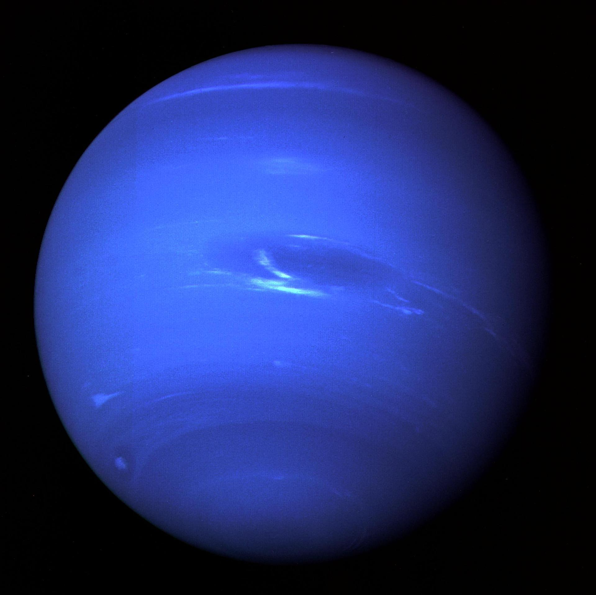

|  |
Neptuno es el planeta del sistema solar mas alejado del Sol y el cuarto de mayor tamano. Forma parte de los denominados planetas exteriores o gaseosos, es decir, aquellos que se encuentran mas alla del Cinturon de Asteroides, que los separa de los planetas solidos. Tiene cinco tenues anillos compuestos de polvo y rocas, 14 satelites naturales o lunas y su masa equivale a 17 veces la de la Tierra. |